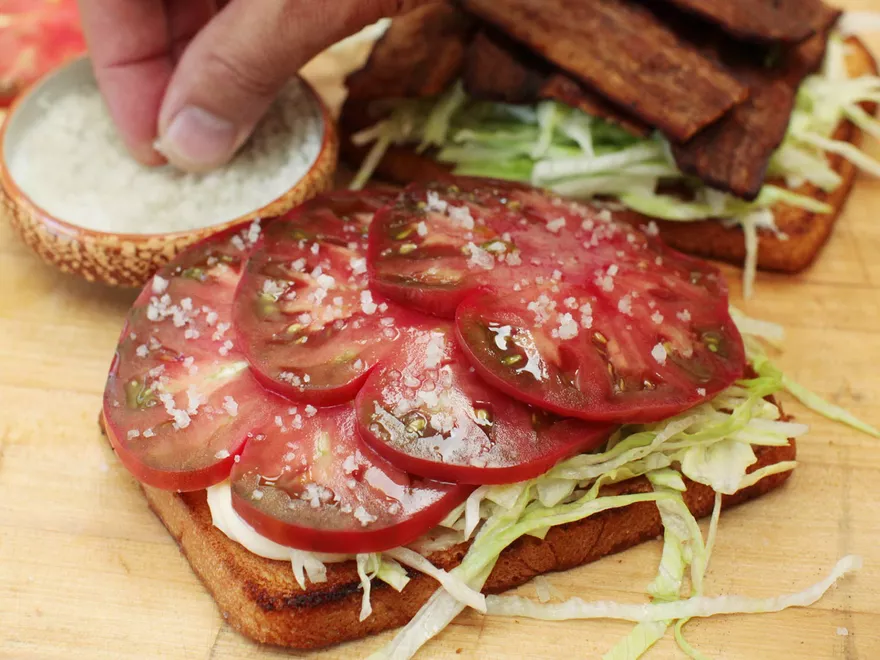

Bacon, Lettuce, & Tomato Sandwich

Description
The BLT is a classic. A sublime combination of complimentary textures
and flavours that has won it a spot on menus across the world. Heirloom
tomatoes are ideal for this if you can find them, but regardless of
which tomato you have just be sure to season it well.
Ingredients
- 2 slices of bread
- 2-3 slices of bacon
- lettuce (iceberg, green, or butter are all good options)
- 2 tbsp mayonnaise
- 2-3 slices of tomato
- salt and pepper to taste
Steps
- Cook bacon until crisp
- Toast bread slices (may optionally toast in the rendered bacon fat)
- Spread mayonnaise on toasted bread
- Stack torn lettuce leaves and sliced tomatoes on one of the bread slices
- Season tomatoes with salt and pepper
- Top with bacon slides and other bread slice
Back to main